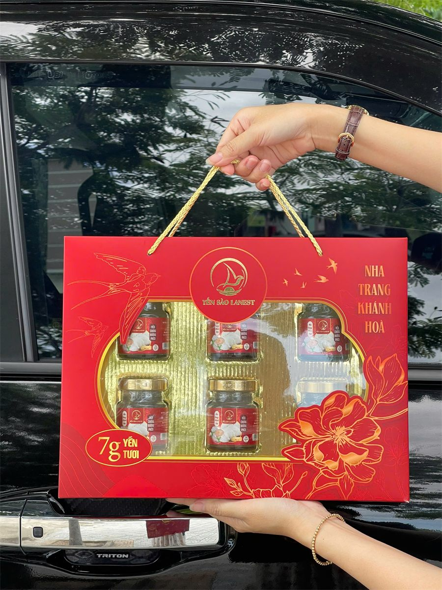
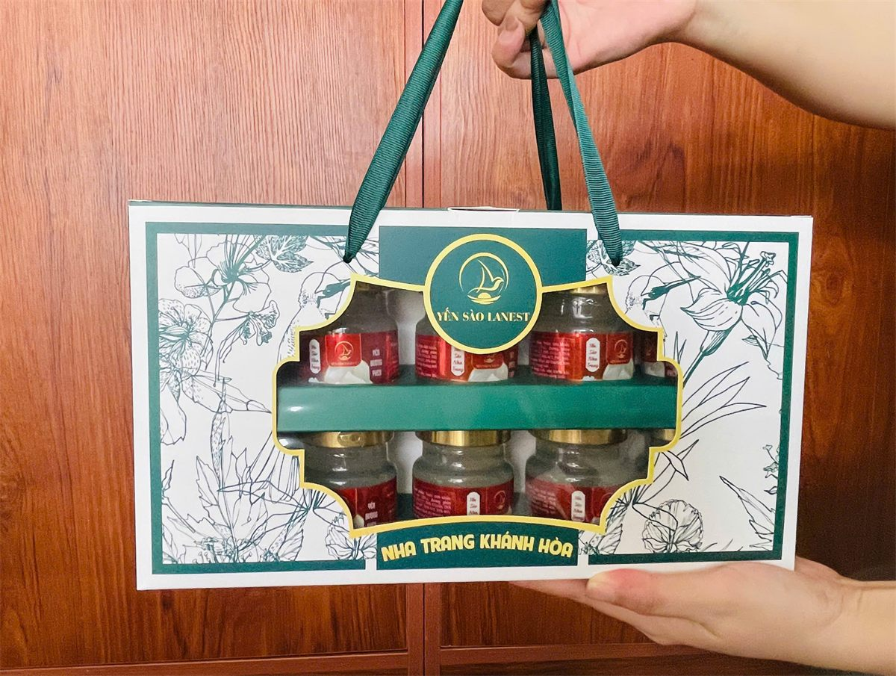

Set Quà Biếu Yến Sào: Gợi Ý Chọn Quà Sức Khỏe Cho Sếp, Đối Tác, Gia Đình
Yến Sào Lanest · Đăng ngày 14/10/2026

Cuối năm là lúc nhiều anh chị bắt đầu tính chuyện quà: quà cho sếp, cho đối tác, cho khách hàng thân, và không thể thiếu phần quà gửi về bố mẹ. Yến sào được chọn nhiều vì nó nói được một điều mà quà khác khó nói: mình mong người nhận khỏe. Bài này gợi ý cách chọn quà biếu sức khỏe yến sào theo từng người nhận, dựa trên đúng những set quà Lanest đang làm.
Hộp quà đỏ 6 hũ yến chưng 7g yến tươi, có quai xách
1. Vì sao yến sào hợp làm quà sức khỏe?
Trong trang cẩm nang tổng quan của Lanest, "quà tặng yến cao cấp" được xếp riêng thành một loại, dành cho doanh nghiệp và quà tặng cá nhân, và "người tìm quà tặng sức khỏe" là một trong những nhóm nên dùng yến. Lý do dễ hiểu: hộp yến vừa trang trọng khi trao tay, vừa là thứ người nhận dùng được thật trong nhà.
Với Lanest, đây cũng là gốc của câu "Trao sức khỏe – Trao yêu thương". Chị Lê, người sáng lập Lanest, kể lại:
"sức khỏe là một cái món quà quý giá nhất mà không có cái tiền nào mà có thể mua được và mình cũng muốn gửi gắm đến những cái người thân yêu là nó còn quý hơn cả tiền bạc nữa."
2. Các set quà yến Lanest đang có
Dưới đây là các quy cách quà đang có. Giá tùy số lượng và cách phối vị, anh chị liên hệ hotline để được báo cụ thể.
| Set quà | Bên trong | Ghi chú |
| Hộp quà đỏ 6 hũ, 10 hũ | Yến hũ chưng 7g yến tươi, hũ thủy tinh 70ml | Có túi rời thêm cho khách |
| Hộp quà xanh 6, 8, 10 hũ | Yến hũ chưng 7g yến tươi | Hộp có quai ruy băng, cửa sổ nhìn thấy hũ |
| Hộp quà kem 6, 10 hũ | Bản 10 hũ là combo 10 vị khác nhau | Kèm túi ngoài |
| Set hộp quà cao cấp | Mẫu hộp quà Tết | Dành cho dịp lễ, biếu trang trọng |
| Hộp đỏ dòng nguyên chất 100% | Hũ 70ml, 1,5g tổ yến mỗi hũ (tương đương 15g yến tươi) | 3 vị: đường phèn, đông trùng hạ thảo, gừng |
| Hộp trẻ em 6 hũ | Yến chưng dành cho trẻ em | Hộp in hình vui mắt cho bé |
| Yến tinh chế | Tổ yến đã làm sạch, hộp hút ẩm | Hộp 50g và 100g |
Lanest thường xuyên làm mới mẫu hộp, nên mẫu thực tế mỗi mùa có thể khác ảnh. Anh chị nhắn trước để xem mẫu đang có.
3. Quà cho sếp, đối tác: chọn sự chỉn chu
Quà gửi sếp hay đối tác cần hai thứ: hộp trông trang trọng và bên trong có chất lượng rõ ràng. Ba lựa chọn hợp nhất:
- Hộp đỏ dòng nguyên chất 100%: mỗi hũ 1,5g tổ yến, thành phần chỉ có nước tinh khiết, tổ yến, đường phèn (vị đông trùng có thêm đông trùng hạ thảo, vị gừng có thêm gừng). Không chất bảo quản, không phẩm màu. Mở nắp dùng ngay, ngon hơn khi uống lạnh.
- Yến tinh chế hộp 50g hoặc 100g: hợp với người quen tự chưng yến ở nhà. Hạn sử dụng theo hồ sơ tự công bố là 24 tháng khi hộp còn nguyên, nên người nhận không phải dùng gấp.
- Set hộp quà cao cấp vào dịp Tết, khi cần món quà mang không khí lễ.
Nếu chưa biết người nhận thích vị nào, đường phèn là vị dễ dùng nhất. Đông trùng hạ thảo có màu vàng cam nhẹ và mùi thơm đặc trưng, hợp người đã quen vị yến.
4. Quà cho gia đình: chọn theo người dùng
Quà gửi về nhà thì không cần cầu kỳ, quan trọng là đúng người dùng:
- Bố mẹ, ông bà: hộp 6 hoặc 10 hũ phối nhiều vị để đổi vị trong tuần. Nhà có người cần hạn chế đường thì nhờ phối vị đường ăn kiêng hoặc đông trùng hạ thảo đường ăn kiêng, và nhắc người nhận hỏi bác sĩ nếu đang điều trị bệnh. Xem thêm bài yến sào cho người tiểu đường và yến sào cho người cao tuổi.
- Nhà có con nhỏ: hộp trẻ em 6 hũ. Lưu ý trẻ từ 12 tháng tuổi trở lên mới nên dùng yến. Chi tiết trong bài yến sào cho trẻ em.
- Người thích tự nấu: yến tinh chế để tự chưng cùng táo đỏ, hạt sen, kỷ tử theo khẩu vị nhà mình.

Hộp quà xanh có cửa sổ nhìn thấy hũ yến bên trong
5. Quà doanh nghiệp số lượng lớn: những điều nên biết
Công ty mua quà cho nhân viên, cho khách hàng hay đối tác thường cần thêm vài thứ ngoài hộp quà:
- Hóa đơn VAT: giá bán lẻ của Lanest đã gồm VAT 8%. Doanh nghiệp cần hóa đơn VAT thì cung cấp thông tin công ty ngay khi đặt hàng, nếu không hóa đơn sẽ xuất theo khách lẻ.
- Phối vị trong cùng đơn: có thể trộn nhiều vị trong một đơn, mỗi hộp một kiểu phối.
- Phụ kiện: ngoài hộp còn có túi xách, vỏ hộp rời 1 hũ và thiệp chúc để anh chị ghi lời gửi.
- Đặt sớm: đơn được nhân viên xác nhận trong vòng 12 giờ làm việc, giao 1–5 ngày tùy khu vực. Mùa lễ đơn dồn nhiều, nên đặt sớm để kịp ngày trao quà.
6. Vài điều nên kiểm tra khi chọn quà yến
Dù mua ở đâu, một hộp quà sức khỏe đúng nghĩa nên có:
- Nhãn ghi rõ thành phần, số tự công bố, ngày sản xuất và hạn sử dụng.
- Hộp, hũ nguyên vẹn, tem niêm phong còn nguyên, nắp kín không rò rỉ.
- Nơi bán sẵn sàng cho xem giấy kiểm nghiệm. Lanest có chứng nhận ISO 22000:2018, yến làm sạch bởi đội thợ riêng qua 4 chốt kiểm trước khi đóng hộp.
Muốn hiểu thêm, anh chị xem bài bên trong xưởng yến Lanest, bài phân biệt yến sào thật giả, và bài cách bảo quản tổ yến để dặn người nhận cất quà đúng cách.
Câu hỏi thường gặp
Mua quà yến cho công ty có xuất hóa đơn VAT được không?
Được. Anh chị gửi thông tin công ty ngay khi đặt hàng để Lanest xuất hóa đơn VAT; giá bán lẻ đã gồm VAT 8%.
Có tự chọn vị cho từng hộp quà không?
Có. Anh chị báo vị muốn phối khi đặt, ví dụ nhà có người cần hạn chế đường thì phối vị đường ăn kiêng.
Giá các set quà là bao nhiêu?
Giá phụ thuộc mẫu hộp, số hũ và số lượng đặt. Anh chị gọi 0258 6278 627 hoặc nhắn fanpage Yến Sào Lanest để được báo giá và xem mẫu hộp đang có.